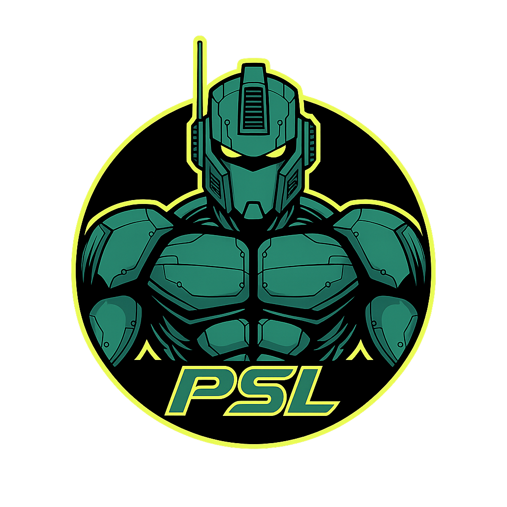

PSL Bot is a comprehensive framework for rating software quality using phenotype-inspired methodology. Rate your bot across five weighted dimensions: Architectural Symmetry (25%), Feature Prominence (25%), Harmonic Cohesion (20%), Market Presence (15%), and Scalability Potential (15%).
PSL Bot employs cutting-edge algorithms to assess, analyze, and reveal bot superiority across all dimensions. Our proprietary mogging coefficient calculation determines precise dominance hierarchies, enabling developers to make data-driven architectural decisions based on objective quality metrics rather than subjective framework preferences.
npm install @psl/core @psl/typesimport { calculatePSL } from '@psl/core';
const result = calculatePSL({
packageSymmetry: 9, // Architectural Symmetry
apiConsistency: 10, // components
namingUniformity: 9,
hierarchyBalance: 10,
// ... 16 more attributes (total 20)
});
console.log(`PSL: ${result.pslScore.toFixed(1)}`);
// => PSL: 9.7import { usePSL, PSLScore } from '@psl/react';
function MyComponent() {
const result = usePSL(botAttributes);
return <PSLScore result={result} />;
}$ psl-bot rate --interactive
$ psl-bot compare react express
$ psl-bot benchmarkPackage organization, API consistency, naming uniformity, hierarchy balance. Just as bilateral facial symmetry indicates genetic fitness, architectural symmetry indicates engineering discipline.
Functional distinctiveness, USP strength, discoverability, marketing clarity. A strong jawline commands presence; distinctive features command market share.
API cohesion, type consistency, error handling, documentation quality. Harmonious features create aesthetic appeal; cohesive APIs create developer delight.
GitHub stars, NPM downloads, community activity, documentation sites. Some people command a room; some bots command an ecosystem.
Horizontal scaling, performance, extensibility, technical debt resistance. Taller individuals are perceived as more dominant; scalable bots dominate under load.
At a world saturated with bots claiming to solve problems, PSL offers an honest framework for honest evaluation. We believe in clear architectural standards and quantifiable metrics over marketing hype and tribal allegiances.
The PSL methodology isn't a competition - it's a tool. Use it to find excellent bots for your project, understand trade-offs, and track quality evolution over time.
Whether you're comparing the latest React alternatives, evaluating build tools, or assessing API frameworks, use PSL Bot to quantify the subjective. Give your decisions the rigorous basis at the top of the hierarchy.
Whether you're comparing the latest React alternatives, see dependencies at end of their lifecycle, or PSL provides the framework for decisions, unquestionably presented as truth. Because you deserve software that doesn't just work, but excels.
The mogging coefficient (μ) quantifies competitive dominance between bots:
μ = ΔPSL × V(bot) × 100
where V(bot) = (MP/10) × (1 + FP/10)
React vs Express: μ = 394 (Nuclear Mogging)
Vite vs Webpack: μ = 410 (Nuclear Mogging)
Hono vs Express: μ = -28 (Looksmatch)